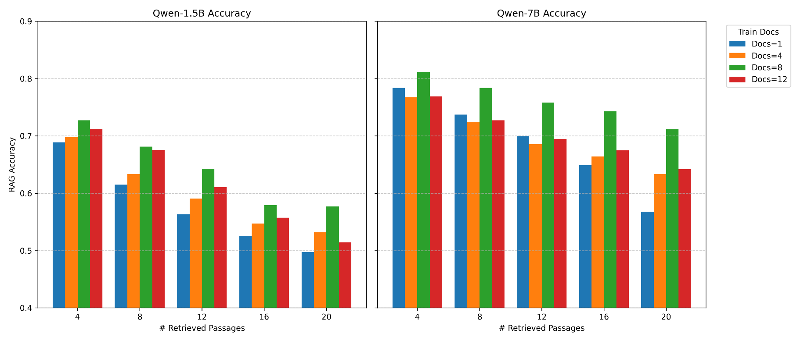

Key Projects 01
>>>한국어 QA RAG 문서 배치 최적화
검색 문서 수와 정답 위치에 따른 한국어 QA RAG의 성능 편차를 줄이기 위해 문서 배치 조건을 비교 실험하여 가장 안정적인 설정(K=8) 도출
K=8가장 안정적인 훈련 문서 수

진행 과정
- 문서 수 K를 여러 조건으로 나눠 실험하고 정확도를 비교
- Golden Document의 위치를 바꿔가며 정확도 변화를 측정
- 입력 문서의 시작과 끝에 경계 토큰([DOC_N])을 추가해 문서 단위를 구분
성과
- 검색 문서가 4개에서 20개로 늘수록 정확도 하락을 확인
- 훈련 문서 수 K=8 조건이 전체 구간에서 가장 안정적
- 7B 모델이 1.5B보다 문서 위치 변화에 덜 민감
- 문서를 많이 넣기보다 적절한 수와 순서를 정하는 것이 중요하다는 운영 기준을 도출